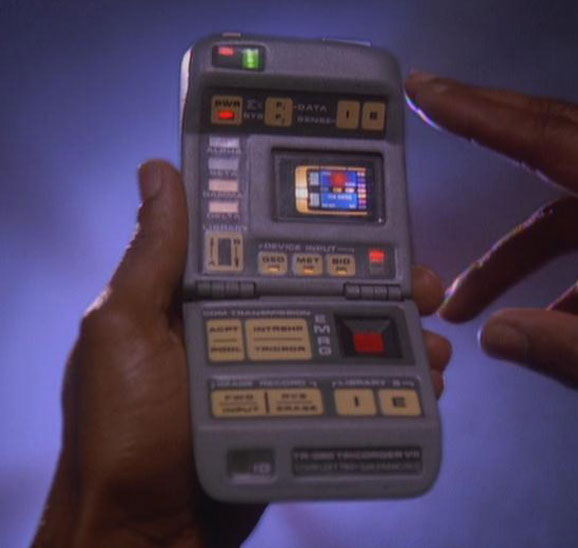
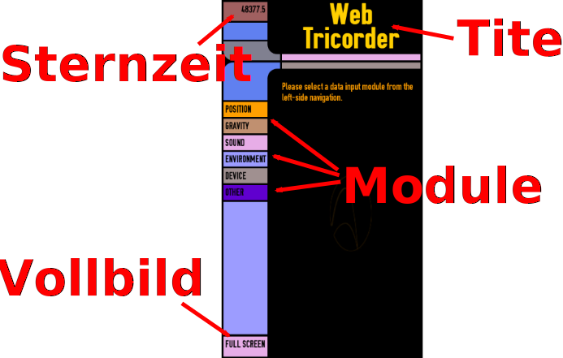

Inhalt
Firefox OS Tricorder
Folgende Folien sind in dieser Präsentation enthalten:
Firefox OS Tricorder
Auslesen von Gerätesensoren mittels JavaScript
Robert Kaiser,
"KaiRo" <kairo@kairo.at>
Release Quality Manager, Mozilla
Release Quality Manager, Mozilla
Folien: https://slides.kairo.at/linuxwochen2015/
- Erstellt für einen Vortrag auf den Linuxwochen 2015 in Wien.
- Geschrieben in HTML 5 mit CSS 3 und JavaScript.
- Navigation mit Links auf allen Folien, mit Accesskeys (z.B. "n"/Alt+Umschalt+N für "next"/weiter) oder vor/zurück-Pfeilasten
- Inhalt
- 04/2015 Robert Kaiser - "Mozilla", "Firefox" und deren Logos sind Handelsmarken der Mozilla Foundation; Star Trek und zugehörige Elemente sind Warenzeichen von Paramount Pictures.
Was ist ein Tricorder?

Sensorgerät wie in "Star Trek" zu sehen
Zeigt jegliche Daten an, die gerade benötigt werden, in Plot-Geschwindigkeit und -auflösung.
Firefox-OS-Tricorder-App
Zeigt Daten von Gerätesensoren an, die von WebAPIs zur Verfügung gestellt werden.
Firefox-OS-Tricorder-Oberfläche

Modul
- HTML (Schalter, Anzeige)
- JS-Objekt
- 2 Methoden: activate(), deactivate()
Positions-Modul
Position: Code
this.watchID = navigator.geolocation.watchPosition( function(position) { position.coords.latitude / .longitude / .accuracy / ... }, function(error) { ... }, {enableHighAccuracy: true, maximumAge: 10000, timeout: 60000} ); navigator.geolocation.clearWatch(this.watchID);
Schwerkraft-Modul ("Gravity")
Schwerkraft: Code
window.addEventListener("deviceorientation", this.orientEvent, true);
window.addEventListener("devicemotion", this.motionEvent, true);
orientEvent: function(orientData) {
orientData.alpha / .beta / .gamma (in °)
},
motionEvent: function(event) {
event.accelerationIncludingGravity.x / .y / .z (in m/s²)
},
window.removeEventListener("deviceorientation", this.orientEvent, true);
window.removeEventListener("devicemotion", this.motionEvent, true);
Schall-Modul ("Sound")
Schall: Code
navigator.getUserMedia({ audio: true }, function(aLocalMediaStream) { gModSound.mAudio.stream = aLocalMediaStream; gModSound.mAudio.context = new window.AudioContext(); gModSound.mAudio.input = gModSound.mAudio.context.createMediaStreamSource(gModSound.mAudio.stream); gModSound.mAudio.analyzer = gModSound.mAudio.context.createAnalyser(); gModSound.mAudio.input.connect(gModSound.mAudio.analyzer); }, function(err) { ... } ); // in window.requestAnimationFrame(): var data = new Uint8Array(gModSound.mAudio.frequencySlices); gModSound.mAudio.analyzer.getByteFrequencyData(data); // ... do something with data ... gModSound.mAudio.stream.stop();
Umgebungs-Modul ("Environment")
Licht, Entfernung; Taschenlampe
APIs: devicelight-, deviceproximity-Ereignisse; Camera API
Berechtigungen: ---; camera (für Lampe)
Umgebung: Code
window.addEventListener("devicelight", this.lightEvent, true);
window.addEventListener("deviceproximity", this.proxEvent, true);
lightEvent: function(lightData) {
lightData.value (in lux)
},
proxEvent: function(proxData) {
proxData.min <= .value <= .max (in cm)
},
window.removeEventListener("devicelight", this.lightEvent, true);
window.removeEventListener("deviceproximity", this.proxEvent, true);
// Taschenlampe mittels navigator.mozCameras.getCamera
// Funktioniert nicht immer und kann sich jederzeit ändern, bitte Code aif GitHub nachlesen.
Geräte-Modul ("Device")
Gerät: Code
0 <= navigator.battery.level <= 1 .charging (true/false) .chargingTime (in s; 0 or Infinity: unbekannt) .dischargingTime (in s; 0 or Infinity: unbekannt)